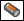
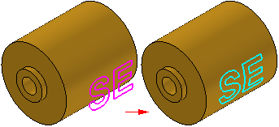
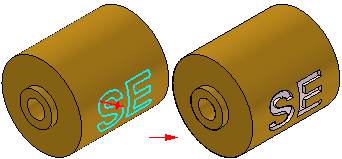
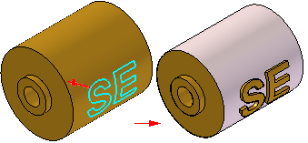

Normal Cutout command (Part environment)
The Normal Cutout command

constructs a cutout that is normal to a part face by extruding a closed curve that lies on the face. This command is useful for constructing a feature on a non-planar face using a text profile or other sketch elements.Unlike the Cutout command, the Normal Cutout command is not profile-based. To construct a normal cutout on a non-planar face, you must first project sketch elements onto the face using the Wrap Sketch or Project Curve commands.

During the Side Step, you can specify whether the normal cutout feature is constructed by:
-
removing material inside the wireframe elements,

-
or removing material outside the wireframe elements.

How do I
Construct a protrusion or cutout (ordered)Define the extent of an extruded feature
Construct a base feature
Construct a cutout (ordered)
Construct a hole
Construct a hole (ordered)
Construct a hole on a cylinder
Construct an extrusion: base feature
Construct an extrusion or cutout: subsequent features
Construct a protrusion or cutout: model face
Construct a Normal Protrusion
Construct a Normal Cutout (Part Environment)
Finish the Feature
Examples: Constructing Protrusions With the Finite Option
Examples: Constructing Protrusions With the Through All Option
Examples: Constructing Protrusions With the Through Next Option
Examples: Constructing Cutouts With the Through All Option
Examples: Constructing Cutouts With the Through Next Option
Examples: Constructing Cutouts With the Finite Option
Learn more
Part modeling workflow overviewPart modeling: Tips for getting started
Look up more details
Extrude command (synchronous)Extrude command bar (synchronous)
Extrude command (ordered)
Extrude command bar (ordered)
Cut command
Cut command bar
Demo: Create protrusion or cutout using keypoint
Normal Protrusion command
Normal Protrusion command bar
Normal Cutout command bar (Part environment)